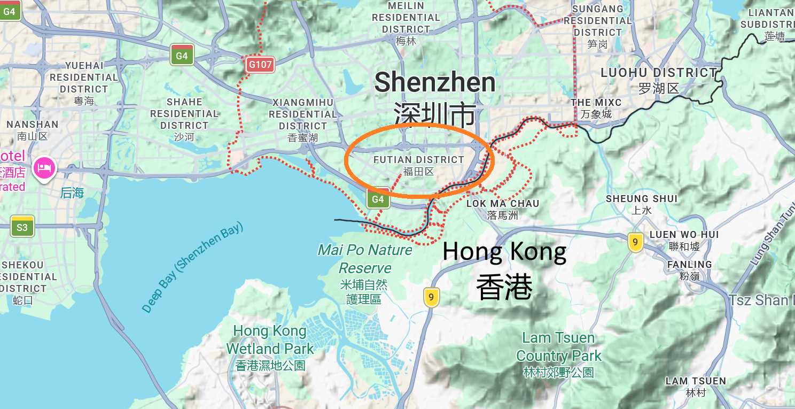

Just over a decade before the new millennium a wee piglet named Piggy 李大豬 lived in the humble "Cornet" fields of Futian 福田, Shenzhen 深圳, China 中国. One day new concrete buildings forced Piggy from its home, marking the beginning of a journey both long and surprisingly short 🐽. In just
four decades Futian has transformed into a bustling
global tech hub, almost unrecognizable from its former self. Piggy was saddened to see the change, but it never forgot its roots🌽. With the spirit of a true Made in China 🇨 🇳 pioneer pig, Piggy is now on a mission to bring its love of sustainable snacking to the buzz of modern city life. Its ultimate goal? To rekindle the joy and spirit of the "fields for cultivating happiness" in 福田 and beyond, one seed-bit at a time (V −(●●)−V)๑ ☆ﾟ.*･｡ﾟ🌱🌽🌽
制造一月-三月'23-26